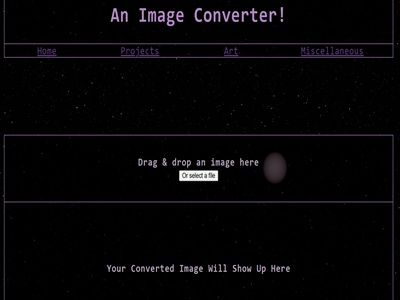
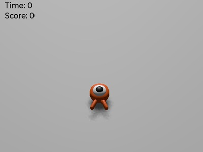

My Projects
Silly Little Color Generator

I wanted random color palettes, so I got them using Javascript!
Python Autoclicker

I play Cookie Clicker from time to time and I don't trust google to get me one without viruses, so I used the python to make my own!
Software Development Final Project: Mock Degree Auditor

For my Software Development Course, our group went through the full development lifecycle for an application similar to DegreeWorks, our school's degree auditing system. Programmed in Java and JavaFX!
Capstone Computing Project: Jack Rabbit and the H.A.N.D.S.

For The University of South Carolina's Big Senior Project (Dubbed the Capstone Computing Project), my group had created a short platforming game in Unity Game Engine. You can checkout the page we made for the final release as well as the Github Repository if you want to!
An Image to .Webp Converter
My background images used to be very large .png files, I saw other websites that could convert images to .webp, so I wanted to be able to do it here as well.
Godot Project: Squash The Creeps
I followed one of the tutorials that Godot Game Engine provided to create this game. You can click the image or the link above to download it and try yourself! I got an introduction to how the engine works, and I also implemented a save and load system to store the player's highscore.